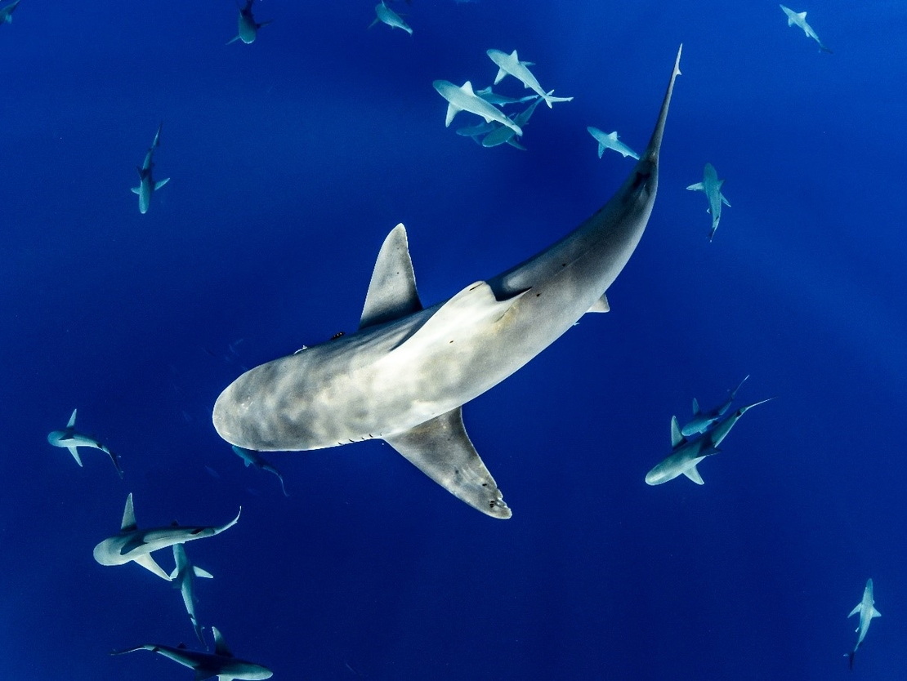

Conservation status
Great white sharks are listed as a vulnerable species in many regions due to historical overfishing, bycatch in commercial fisheries and targeted culling programs. Their slow growth and low reproductive rate mean that populations can take decades to recover from declines.
Major threats
- Bycatch: Accidental capture in gillnets and longlines can injure or kill sharks that are not the intended target.
- Targeted fishing: In some areas, great whites have been caught for their jaws, teeth and fins.
- Habitat degradation: Coastal development and pollution can affect important nursery and feeding areas.
- Negative perceptions: Fear-based attitudes can lead to support for lethal control measures after shark incidents.

Protection measures
Many countries, including Australia, have granted legal protection to great white sharks, making it illegal to catch or harm them. Marine protected areas and seasonal fishing closures can reduce the risk of bycatch in key habitats. International agreements also regulate trade in shark products derived from protected species.
Role of research and education
Long-term research projects track shark movements, estimate population sizes and investigate how sharks respond to environmental change. Public education campaigns aim to replace fear with understanding, highlighting the ecological importance of sharks and promoting coexistence. These efforts contribute to more informed policy decisions and community support for non-lethal management strategies.